Apache NetBeans
Apache NetBeansLatest release
NetBeans Platform Feed Reader Tutorial
| This tutorial needs a review. You can edit it in GitHub following these contribution guidelines. |
Welcome to the NetBeans Platform Feed Reader tutorial. The Feed Reader that you create in this tutorial is a simple RSS/Atom feed browser, modeled after the Sage plug-in for Mozilla Firefox. It presents a tree of feeds with subnodes representing individual feed entries that you can open in a browser.
To illustrate the end result, here you see the Feed Reader that you will create in this tutorial, displaying a feed entry from the Planet NetBeans feed:
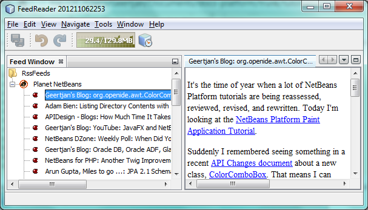
This is not a beginner’s tutorial. The assumption is that you are familiar with, and have used, NetBeans Platform idioms such as " Node" and " Lookup". The NetBeans Platform Learning Trail provides several quick starts and other beginner materials that cover these topics in detail.
For troubleshooting purposes, you are welcome to download the completed tutorial source code.
Setting Up the Application
Let’s start with a quick revision of some basic concepts. Firstly, building an application on top of the NetBeans Platform starts with generating a number of folders and files which serve as the foundation of your application. For example, NetBeans IDE provides several project wizards that set up all the basic files needed by modules and applications built on the NetBeans Platform.
-
NetBeans Platform Application. A project that groups a set of module projects and library wrapper module projects that have dependencies on each other, and lets you deploy them together as a unit. Automatically included are a subset of the modules that make up the NetBeans Platform.
-
Module Suite. Same as above, except that the pre-included modules are more than only those relating to the NetBeans Platform—in this case, all the modules that make up NetBeans IDE are included as well.
-
Library Wrapper Module. A project that puts a library JAR file on its classpath and exports some or all of the JAR file’s packages from the module as public packages.
-
Module. A project for implementing the functionality, business logic, and user interface of a module or application built on the NetBeans Platform.
Now we’ll begin creating our own application, the Feed Reader.
Creating the Application Skeleton
-
Choose File > New Project (Ctrl-Shift-N). Under Categories, select NetBeans Modules. Under Projects, select NetBeans Platform Application. You should see the following:
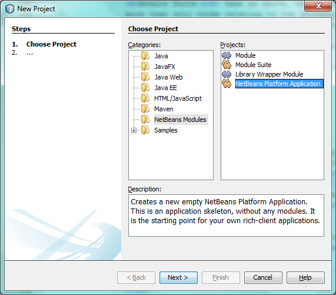
Depending on the modules installed in your IDE, different categories may be shown in the Categories list above.
Click Next.
-
In the Name and Location panel, type
FeedReaderin Project Name. Change the Project Location to any directory on your computer:
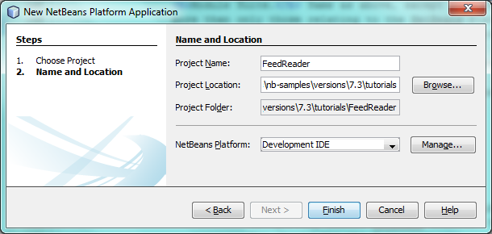
Click Finish.
The IDE creates the FeedReader project, which looks as follows in the Projects window:
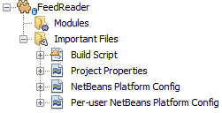
The project will contain the custom module projects that you will create in the following sections.
Wrapping the Libraries
You could bundle the entire Feed Reader application into a single module. However, the application needs the Rome, Rome Fetcher, and JDom libraries:
-
Rome. Reads RSS and Atom feeds, using a very simple API.
-
Rome Fetcher. Allows the retrieval of feeds via HTTP.
-
JDom. Is an XML parsing API. The only reason the Feed Reader will need it is because the Rome library uses it.
Later, if you want to extend the Feed Reader application with more modules that may use these libraries, it would be better for them to depend on just the library modules, rather than the entire Feed Reader. Also, library modules can be "autoloading", which means that NetBeans will only load them when needed. Until that happens, it won’t take up any memory at runtime.
-
Right-click the Modules node in the project in the Projects window, as shown below, and click Add New Library:
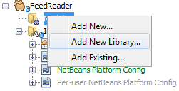
-
In the Select Library panel, browse to the folder where you downloaded JDom, and then select
jdom.jarandLICENSE.txt.Click Next.
1.
In the Name and Location panel, accept all the defaults. The library wrapper module project will be stored within the application project. You could also store it somewhere else, but for versioning purposes it is a good idea to put it within the application project. Therefore, the FeedReader application project is selected in the Add to Module Suite drop-down. Click Next.
-
In the Basic Module Configuration panel, type
org.jdomas the code name base and leave all the other defaults unchanged. Click Finish. The new library wrapper module project opens in the IDE and displays in the Projects window. You should now see the following in the Projects window:
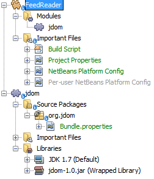
A frequent point of confusion is that you see two different "jdom" nodes above, each accompanied by a purple icon. The first of these, above, shows the relationship of the "jdom" module to the whole application. The second is the "jdom" project itself, containing its sources and libraries. This pattern is used throughout the application, with each module being shown in two different ways, as above.
-
Return to step 1 of this section and create a library wrapper module project for Rome. Use code name base "org.rome" and accept all the other defaults.
-
Return to step 1 of this section and create a library wrapper module project for Rome Fetcher. Use code name base "org.fetcher" and accept all the other defaults.
You now have an application skeleton, with three library wrapper module projects, providing many useful Java classes that you will be able to make use of throughout this tutorial:
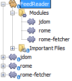
Creating the Module Project
In this section, we create a project for the functionality that our application will provide. The project will make use of the classes made available by the library wrapper modules that we created in the previous section.
-
Right-click the Modules node in the application project in the Projects window, as shown below, and click Add New:
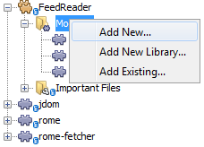
-
In the Name and Location panel, type
FeedReaderin Project Name. Accept all the other defaults. Click Next.
-
In the Basic Module Configuration panel, type
org.myorg.feedreaderin Code Name Base.
-
Do not select "Generate OSGi Bundle". Click Finish.
The IDE creates the FeedReader project. The project contains all of the module’s sources and project metadata, such as the project’s Ant build script. The project opens in the IDE. You can view its logical structure in the Projects window (Ctrl-1) and its file structure in the Files window (Ctrl-2). The Projects window should now show the following:
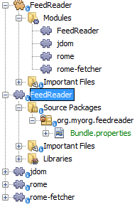
Specifying the Application’s Dependencies
You need to subclass several classes that belong to the NetBeans APIs. The classes belong to modules that need to be declared as dependencies of your Feed Reader application. Use the Project Properties dialog box for this purpose, as explained in the steps below.
-
In the Projects window, right-click the
FeedReadermodule project and choose Properties. In the Project Properties dialog box, click Libraries.
-
Click Add Dependency. You will need the following APIs. Click the links below for further information on each of the APIs you will be using.
Click OK to exit the Project Properties dialog box.
-
Expand the
FeedReaderproject’s Libraries node and notice the list of modules that are now available to this project:
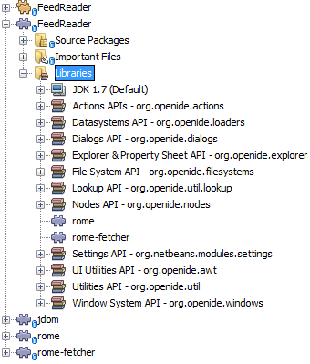
Setting Dependencies Between Library Wrapper Modules
Now that we have set dependencies on the NetBeans API modules that we will use, let’s also set dependencies between our library wrapper modules. For example, the Rome JAR makes use of classes from the JDom JAR. Now that these are wrapped in separate library wrapper modules, we need to specify the relationship between the JARs via the library wrapper module’s Project Properties dialog box.
-
First, lets make Rome dependent on JDom. Right-click the Rome library wrapper module project in the Projects window and choose Properties. In the Project Properties dialog box, click Libraries and then click Add Dependency. Add
jdom. Click OK to exit the Project Properties dialog box. When you expand the Libraries node in the Rome project, you should now see the following:
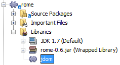
-
Finally, since Rome Fetcher depends on both Rome and JDom, you need to make Rome Fetcher dependent on Rome. Do so following the same instructions as the above, so that Rome Fetcher depends on Rome, as shown below:
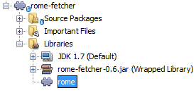
Because Rome already depends on JDom, you do not need to make Rome Fetcher dependent on JDom.
You have now created the source structure of your new application. In the next section, we will begin adding some code.
Creating the Feed Reader Window
In this section, you use the Java Class wizard as a starting point in creating a new window. A different way to achieve the same end is to use the New Window wizard, in the Module Development category in the New File dialog. The New Window wizard is useful in that it integrates with the Matisse GUI Builder, where you can design the layout of your window. No layouting will need to be done in the case of the Feed Reader window, therefore we will not use the New Window wizard in this case.
-
Right-click the
org.myorg.feedreaderpackage node. Choose New > Java Class. EnterFeedTopComponentas the Class Name. Ensure thatorg.myorg.feedreaderis listed as the Package. Click Finish.FeedTopComponent.javaopens in the Source editor.
-
Near the top of the file, change the class declaration to the following:
public class FeedTopComponent extends TopComponent {Press Ctrl-Shift-I to let the IDE generate the required import statement.
-
Register the
FeedTopComponentin the window system by adding annotations to the top of the class, as shown here, and then press Ctrl-Shift-I to let the IDE generate the appropriate import statements:
@TopComponent.Description
(
preferredID = "FeedTopComponent",
persistenceType = TopComponent.PERSISTENCE_ALWAYS)
@TopComponent.Registration(
mode = "explorer",
openAtStartup = true)
@ActionID(
category = "Window",
id = "org.myorg.feedreader.FeedTopComponent")
@ActionReferences({
@ActionReference(
path = "Menu/Window",
position = 0)
})
@TopComponent.OpenActionRegistration(
displayName = "#CTL_FeedAction")
@Messages({
"CTL_FeedAction=Open Feed Window"})
public class FeedTopComponent extends TopComponent {
While the module is being compiled, the annotations above will be processed. XML entries will be created in the module’s generated-layer.xml file, for each of the @TopComponent* and @Action* annotations. The generated-layer.xml file will be contributed by the module to the System Filesystem of the application. Read more about the System Filesystem here. For example, the FeedTopComponent will be displayed in the main area of the application, defined by the "editor" position, as specified by the @TopComponent.Registration annotation above. For each item defined in the @Messages annotation, a new key/value string is generated into a Bundle.java class.
|
-
Add a constructor to the
FeedTopComponent, while again using the@Messagesannotation referred to above:
@Messages({
"CTL_FeedTopComponent=Feed Window",
"HINT_FeedTopComponent=This is a Feed Window"})
private FeedTopComponent() {
setName(Bundle.CTL_FeedTopComponent());
setToolTipText(Bundle.HINT_FeedTopComponent());
}-
In the Projects window, right-click the
FeedReaderproject and choose Run, as shown below:
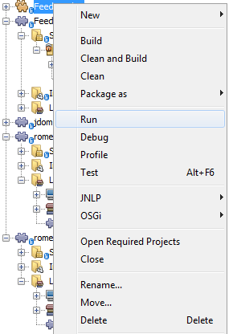
The application starts up, the default splash screen is shown, and once the application has started, you should see your application, including the new window provided by your module:
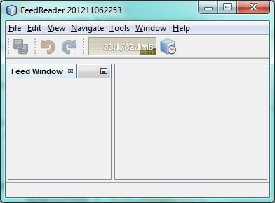
| What you now have is an application consisting of the following modules: |
-
The modules provided by the NetBeans Platform, for bootstrapping the application, lifecycle management, window system, menu bars, toolbars, and other infrastructural concerns.
-
The three library wrapper modules that you created in this tutorial.
-
The FeedReader functionality module that you created in this tutorial, for providing the Feed window.
In the application’s Window menu, you should see the new menu item, which you can use for opening the Feed window, if it is closed.
As you can see, without having done any coding, we have a complete application. It doesn’t do much yet, but the entire infrastructure exists and works as one would expect. Next, we begin using some of the NetBeans APIs, to add code to our application.
Creating the Model
Now that you have laid the basis for your application, it’s time to begin adding your own code. We start by creating a plain Java class that encapsulates a URL and its associated Rome feed. In an MVC paradigm, this class the model of the application.
-
Right-click the
FeedReadermodule project node, choose New > Java Class. Name the classFeedand selectorg.myorg.feedreaderin the Package drop-down. Click Finish.
-
In the Source Editor, replace the default
Feedclass with the following:
package org.myorg.feedreader;
import com.sun.syndication.feed.synd.SyndFeed;
import com.sun.syndication.fetcher.FeedFetcher;
import com.sun.syndication.fetcher.impl.HashMapFeedInfoCache;
import com.sun.syndication.fetcher.impl.HttpURLFeedFetcher;
import java.io.IOException;
import java.io.Serializable;
import java.net.MalformedURLException;
import java.net.URL;
public class Feed implements Serializable {
private static final long serialVersionUID = 1L;
private static final FeedFetcher FEED_FETCHER =
new HttpURLFeedFetcher(HashMapFeedInfoCache.getInstance());
private transient SyndFeed syndFeed;
private final URL url;
private String name;
public Feed(URL url) {
this.url = url;
name = url.toExternalForm();
}
public URL getURL() {
return url;
}
public SyndFeed getSyndFeed() throws IOException {
if (syndFeed == null) {
try {
syndFeed = FEED_FETCHER.retrieveFeed(url);
String title = syndFeed.getTitle();
if (title != null) {
name = title;
}
} catch (Exception ex) {
throw new IOException(ex);
}
}
return syndFeed;
}
@Override
public String toString() {
return name;
}
public static Feed getSample() {
try {
return new Feed(new URL("http://planetnetbeans.org/rss20.xml"));
} catch (MalformedURLException x) {
throw new AssertionError(x);
}
}
}
In the next three steps, you’re going to create a new layer.xml file. Each module in your application can have at most one of these files. The layer.xml file is registered in the manifest file of the module, by the wizard that you use to create it. The layer.xml file provides the module’s contributions to the application’s virtual filesystem, known as the System Filesystem. In this case, you’re going to contribute a new folder, named "RssFeeds" to the virtual filesystem. Later in this tutorial, when you work on the view, the node hierarchy will be created on top of this virtual folder. Within the virtual folder, multiple feeds will be found. Right now, a sample feed is registered there, via the getSample method above. That method will be registered in the "RssFeeds" folder, in the third of the three steps that follow, so that when the "RssFeeds" folder is referred to in the view, later in this tutorial, the sample feed will automatically be created because the getSample method will be instantiated.
|
-
Right-click the
org.myorg.feedreaderpackage node and choose New | Other. In the Module Development category, choose XML Layer, as shown below:
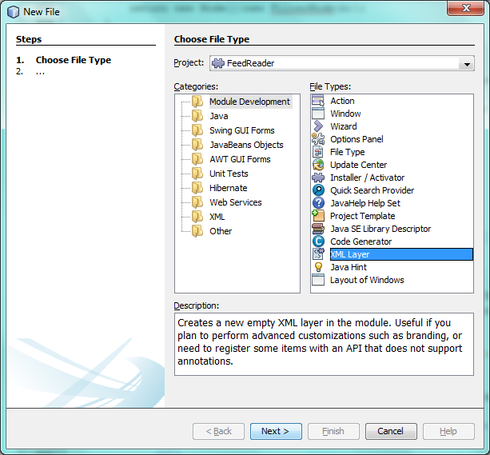
Click Next.
-
The layer file will be created in the location shown below. It will also be registered in the manifest file of the module.
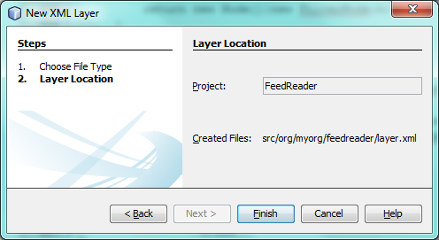
Click Finish. The layer.xml file is added to the module and registered in the module’s manifest.mf file.
-
Change the content of the
layer.xmlto the following, to create your RssFeeds folder in the virtual filesystem:
<?xml version="1.0" encoding="UTF-8"?>
<!DOCTYPE filesystem PUBLIC "-//NetBeans//DTD Filesystem 1.2//EN" "https://netbeans.org/dtds/filesystem-1_2.dtd">
<filesystem>
<folder name="RssFeeds">
<file name="sample.instance">
<attr name="instanceCreate" methodvalue="org.myorg.feedreader.Feed.getSample"/>
</file>
</folder>
</filesystem>Creating the Node Hierarchy
The application will have a node hierarchy consisting of three levels. Below, each node is defined, together with a factory class for instantiating the node. The root node will be instantiated within the TopComponent , later in the tutorial, in the section "Displaying the Node Hierarchy in the Feed Window".
Creating the First Level Node: The Root Node
The top level node of our Feed Reader is provided by the RootNode class. It will create its child nodes by wrapping a virtual folder, named "RssFeeds", which you created in the previous section. The virtual folder will be received, later in the tutorial, in the form of a node, which is what the root node will wrap. The root node will have the display name of the node that it wraps, while providing the top level node in the node hierarchy, as shown below:
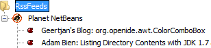
| In addition to child nodes, when the user right-clicks the root node, the root node will provide a pop-up menu containing a menu item for any action registered in the "Actions/RootActions" folder in the application’s virtual filesystem, that is, the System Filesystem. Right at the end of this tutorial, two actions will be registered in that folder. |
Take the following steps:
-
Create a new class named
RootNode.javain theorg.myorg.feedreaderpackage.
-
Replace the default class with the following:
package org.myorg.feedreader;
import java.util.List;
import javax.swing.Action;
import org.openide.loaders.DataObjectNotFoundException;
import org.openide.nodes.FilterNode;
import org.openide.nodes.Node;
import org.openide.util.Utilities;
public class RootNode extends FilterNode {
public RootNode(Node filterNode) throws DataObjectNotFoundException {
super(filterNode, new RssFolderChildren(filterNode));
}
@Override
public Action[] getActions(boolean bln) {
List<? extends Action> rootActions = Utilities.actionsForPath("Actions/RootActions");
return rootActions.toArray(new Action[rootActions.size()]);
}
}| A red underline marking remains in the class, because you have not yet created the RssFolderChildren class. |
Creating the Children of the Root Node
In this section, we create the children of the root node. Each child is a folder, containing RSS feeds. The RSS feeds, in turn, contain the entries representing the feed articles, which the user will read in a browser.
To create this class, take the following steps:
-
Create
RssFolderChildren.javain theorg.myorg.feedreaderpackage.
1. Replace the default class with the following:
package org.myorg.feedreader;
import java.io.IOException;
import org.openide.filesystems.FileObject;
import org.openide.filesystems.FileUtil;
import org.openide.loaders.DataObjectNotFoundException;
import org.openide.nodes.FilterNode;
import org.openide.nodes.Node;
import org.openide.util.Exceptions;
import org.openide.util.Lookup;
public class RssFolderChildren extends FilterNode.Children {
RssFolderChildren(Node rssFolderNode) {
super(rssFolderNode);
}
@Override
protected Node[] createNodes(Node n) {
FileObject fo = n.getLookup().lookup(FileObject.class);
if (fo != null && fo.isFolder()) {
try {
return new Node[]{new RootNode(n)};
} catch (DataObjectNotFoundException ex) {
Exceptions.printStackTrace(ex);
}
} else {
Feed feed = getFeed(fo.getLookup());
if (feed != null) {
try {
return new Node[]{new OneFeedNode(n, feed.getSyndFeed())};
} catch (IOException ioe) {
Exceptions.printStackTrace(ioe);
}
}
}
// best effort
return new Node[]{new FilterNode(n)};
}
/**
* Looking up a feed
*/
private static Feed getFeed(Lookup lookup) {
Feed f = FileUtil.getConfigObject("RssFeeds/sample.instance", Feed.class);
if (f == null) {
throw new IllegalStateException("Bogus file in feeds folder: "
+ lookup.lookup(FileObject.class));
}
return f;
}
}
If you’re using NetBeans Platform 7.2, replace getFeed(fo.getLookup()) with getFeed(DataObject.find(fo).getLookup()) .
|
Creating the Second Level Node: The Feed Node
Here we are concerned with feeds, that is, the containers for the entry nodes, as shown below for the "Planet NetBeans" feed:
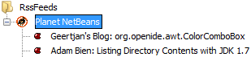
As can be seen, each of these nodes has a list of entries, a display name, retrieved from the feed, and an icon. The icon is provided in the table at the start of this tutorial. Unzip it from there and add it to the main source package of the module. Each Feed node also has a Delete menu item.
Take the following steps to create this class:
-
Create
OneFeedNode.javain theorg.myorg.feedreaderpackage.
-
Replace the default class with the following:
package org.myorg.feedreader;
import com.sun.syndication.feed.synd.SyndFeed;
import java.awt.Image;
import javax.swing.Action;
import org.openide.actions.DeleteAction;
import org.openide.nodes.FilterNode;
import org.openide.nodes.Node;
import org.openide.util.ImageUtilities;
import org.openide.util.actions.SystemAction;
import org.openide.util.lookup.Lookups;
/**
* Getting the feed node and wrapping it in a FilterNode
*/
public class OneFeedNode extends FilterNode {
OneFeedNode(Node feedFileNode, SyndFeed feed) {
super(feedFileNode, Children.create(new FeedChildFactory(feed), false), Lookups.fixed(feed));
}
@Override
public String getDisplayName() {
return getLookup().lookup(SyndFeed.class).getTitle();
}
@Override
public Image getIcon(int type) {
return ImageUtilities.loadImage("org/myorg/feedreader/rss16.gif");
}
@Override
public Image getOpenedIcon(int type) {
return getIcon(type);
}
@Override
public Action[] getActions(boolean context) {
return new Action[]{SystemAction.get(DeleteAction.class)};
}
}Several red underline markings remain in the class, because we have not created our FeedChildFactory class yet.
Creating the Children of the Feed Node
The children of the Feed node are Entry nodes, which in turn are created by a ChildFactory class, as defined below.
To create this class, take the following steps:
-
Create
FeedChildFactory.javain theorg.myorg.feedreaderpackage.
1. Replace the default class with the following:
package org.myorg.feedreader;
import com.sun.syndication.feed.synd.SyndEntry;
import com.sun.syndication.feed.synd.SyndFeed;
import java.beans.IntrospectionException;
import java.util.List;
import org.openide.nodes.ChildFactory;
import org.openide.nodes.Node;
import org.openide.util.Exceptions;
import org.openide.util.NbCollections;
public class FeedChildFactory extends ChildFactory<SyndEntry> {
private final SyndFeed feed;
public FeedChildFactory(SyndFeed feed) {
this.feed = feed;
}
@Override
protected boolean createKeys(List<SyndEntry> list) {
list.addAll(NbCollections.checkedListByCopy(feed.getEntries(), SyndEntry.class, true));
return true;
}
@Override
protected Node createNodeForKey(SyndEntry entry) {
OneEntryNode node = null;
try {
node = new OneEntryNode(entry);
} catch (IntrospectionException ex) {
Exceptions.printStackTrace(ex);
}
return node;
}
}Creating the Third Level Node: The Entry Node
Finally, we deal with the lowest level nodes, those that represent entries provided by the feed, such as the highlighted entry below:
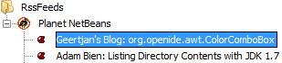
To create this class, take the following steps:
-
Create
OneEntryNode.javain theorg.myorg.feedreaderpackage.
-
Replace the default class with the following:
package org.myorg.feedreader;
import com.sun.syndication.feed.synd.SyndContent;
import com.sun.syndication.feed.synd.SyndEntry;
import java.awt.BorderLayout;
import java.beans.IntrospectionException;
import javax.swing.Action;
import javax.swing.JEditorPane;
import javax.swing.JScrollPane;
import org.openide.actions.OpenAction;
import org.openide.cookies.OpenCookie;
import org.openide.nodes.BeanNode;
import org.openide.nodes.FilterNode;
import org.openide.util.actions.SystemAction;
import org.openide.util.lookup.Lookups;
import org.openide.windows.TopComponent;
class OneEntryNode extends FilterNode {
private final SyndEntry entry;
public OneEntryNode(SyndEntry entry) throws IntrospectionException {
super( new BeanNode<SyndEntry>(entry),
Children.LEAF,
Lookups.fixed(new EntryOpenCookie(entry)));
this.entry = entry;
}
/**
* Using HtmlDisplayName ensures any HTML in RSS entry titles are properly
* handled, escaped, entities resolved, etc.
*/
@Override
public String getHtmlDisplayName() {
return entry.getTitle();
}
/**
* Making a tooltip out of the entry's description
*/
@Override
public String getShortDescription() {
StringBuilder sb = new StringBuilder();
sb.append("Author: ").append(entry.getAuthor()).append("; ");
if (entry.getPublishedDate() != null) {
sb.append("Published: ").append(entry.getPublishedDate().toString());
}
return sb.toString();
}
/**
* Providing the Open action on a feed entry
*/
@Override
public Action[] getActions(boolean popup) {
return new Action[]{SystemAction.get(OpenAction.class)};
}
@Override
public Action getPreferredAction() {
return getActions(false)[0];
}
/**
* Specifying what should happen when the user invokes the Open action
*/
private static class EntryOpenCookie implements OpenCookie {
private final SyndEntry entry;
EntryOpenCookie(SyndEntry entry) {
this.entry = entry;
}
@Override
public void open() {
BrowserTopComponent btc = new BrowserTopComponent(entry);
btc.open();
btc.requestActive();
}
}
public static final class BrowserTopComponent extends TopComponent {
public BrowserTopComponent(SyndEntry entry) {
setName(entry.getTitle());
setLayout(new BorderLayout());
JEditorPane editorPane = new JEditorPane();
editorPane.setEditable(false);
SyndContent description = entry.getDescription();
if (description != null) {
editorPane.setContentType("text/html");
editorPane.setText(description.getValue());
}
add(new JScrollPane(editorPane), BorderLayout.CENTER);
putClientProperty(/*PrintManager.PRINT_PRINTABLE*/"print.printable", true);
}
}
}Instead of a JEditorPane , you can use the JavaFX WebView component. A NetBeans module providing the JavaFX WebView component embedded in a TopComponent , together with all its dependencies, is found here: http://java.net/projects/javafxbrowser.
Displaying the Node Hierarchy in the Feed Window
In this section, we use a NetBeans Platform component called BeanTreeView to display a hierarchy of feeds in our TopComponent .
-
Open
FeedTopComponent.javaand typeimplements ExplorerManager.Providerat the end of the class declaration.
-
Press Alt-Enter in the line and click on the suggestion. The IDE adds an import statement for the required package
org.openide.explorer.ExplorerManager. Press Alt-Enter again and click on the suggestion. The IDE implements the abstract methodgetExplorerManager().
-
Type
return manager;in the body of the newgetExplorerManager()method. Press Alt-Enter in the line and let the IDE create a field calledmanagerfor you. Replace the default definition with this one:
private final ExplorerManager manager = new ExplorerManager();-
Finally, add the following code to the end of the constructor:
setLayout(new BorderLayout());
add(new BeanTreeView(), BorderLayout.CENTER);
try {
FileObject rssFeedsFolder = FileUtil.getConfigFile("RssFeeds");
Node rssFeedsNode = DataObject.find(rssFeedsFolder).getNodeDelegate();
manager.setRootContext(new RootNode(rssFeedsNode));
} catch (DataObjectNotFoundException ex) {
Exceptions.printStackTrace(ex);
}
ActionMap map = getActionMap();
map.put("delete", ExplorerUtils.actionDelete(manager, true));
associateLookup(ExplorerUtils.createLookup(manager, map));-
Now a lot of code is underlined, because you have not declared their associated packages. Press Ctrl-Shift-I and the IDE adds several import statements below the package statement. The complete list of import statements should be as follows:
import java.awt.BorderLayout;
import java.util.logging.Logger;
import javax.swing.ActionMap;
import org.openide.util.NbBundle;
import org.openide.windows.TopComponent;
import org.openide.windows.WindowManager;
import org.openide.util.ImageUtilities;
import org.netbeans.api.settings.ConvertAsProperties;
import org.openide.explorer.ExplorerManager;
import org.openide.explorer.ExplorerUtils;
import org.openide.explorer.view.BeanTreeView;-
Right-click the application and choose Run. You should see the application shown at the start of this tutorial:
Creating the Actions
Two Action classes are defined below. Via annotations, they are registered in the "Actions/RootActions" folder, which is where the RootNode , defined earlier in this tutorial, will find them.
Creating the Add Feed Action
In this section, we create the menu item that adds new feeds. As you can see in the previous section, the Add Feed Action is bound to the context-menu of the Root Node.
To create this class, take the following steps:
-
Create
AddRssAction.javain theorg.myorg.feedreaderpackage.
1. Replace the default class with the following:
package org.myorg.feedreader;
import java.awt.event.ActionEvent;
import java.io.IOException;
import java.io.InputStream;
import java.io.ObjectOutputStream;
import java.net.MalformedURLException;
import java.net.URL;
import javax.swing.AbstractAction;
import org.openide.DialogDisplayer;
import org.openide.NotifyDescriptor;
import org.openide.awt.ActionID;
import org.openide.awt.ActionRegistration;
import org.openide.filesystems.FileLock;
import org.openide.filesystems.FileObject;
import org.openide.loaders.DataFolder;
import org.openide.util.Exceptions;
import org.openide.util.NbBundle.Messages;
@ActionID(category = "RootActions", id = "org.myorg.feedreader.AddRssAction")
@ActionRegistration(displayName = "#FN_addbutton")
@Messages("FN_addbutton=Add Feed")
public class AddRssAction extends AbstractAction {
private final DataFolder folder;
public AddRssAction(DataFolder df) {
folder = df;
}
@Messages({
"FN_askurl_msg=Enter the URL of an RSS/Atom Feed",
"FN_askurl_title=New Feed",
"FN_askurl_err=Invalid URL: {0}|",
"FN_cannotConnect_err=Cannot Connect!"
})
@Override
public void actionPerformed(ActionEvent ae) {
NotifyDescriptor.InputLine nd = new NotifyDescriptor.InputLine(
Bundle.FN_askurl_msg(),
Bundle.FN_askurl_title(),
NotifyDescriptor.OK_CANCEL_OPTION,
NotifyDescriptor.PLAIN_MESSAGE);
Object result = DialogDisplayer.getDefault().notify(nd);
if (result.equals(NotifyDescriptor.OK_OPTION)) {
String urlString = nd.getInputText();
URL url;
try {
url = new URL(urlString);
} catch (MalformedURLException e) {
Exceptions.attachLocalizedMessage(e, Bundle.FN_askurl_err(result));
Exceptions.printStackTrace(e);
return;
}
try {
checkConnection(url);
} catch (IOException e) {
Exceptions.attachLocalizedMessage(e, Bundle.FN_cannotConnect_err());
Exceptions.printStackTrace(e);
return;
}
Feed f = new Feed(url);
FileObject fld = folder.getPrimaryFile();
String baseName = "RssFeed";
int ix = 1;
while (fld.getFileObject(baseName + ix, "ser") != null) {
ix++;
}
try {
FileObject writeTo = fld.createData(baseName + ix, "ser");
FileLock lock = writeTo.lock();
try {
ObjectOutputStream str = new ObjectOutputStream(writeTo.getOutputStream(lock));
try {
str.writeObject(f);
} finally {
str.close();
}
} finally {
lock.releaseLock();
}
} catch (IOException ioe) {
Exceptions.printStackTrace(ioe);
}
}
}
private static void checkConnection(final URL url) throws IOException {
InputStream is = url.openStream();
is.close();
}
}Creating the Add Folder Action
In this section, we create the menu item that adds new folders, in which new feeds can be created. As you can see in an earlier section, the Add Folder Action is bound to the context-menu of the Root Node.
To create this class, take the following steps:
-
Create
AddFolderAction.javain theorg.myorg.feedreaderpackage.
1. Replace the default class with the following:
package org.myorg.feedreader;
import java.awt.event.ActionEvent;
import java.io.IOException;
import javax.swing.AbstractAction;
import org.openide.DialogDisplayer;
import org.openide.NotifyDescriptor;
import org.openide.awt.ActionID;
import org.openide.awt.ActionRegistration;
import org.openide.loaders.DataFolder;
import org.openide.util.Exceptions;
import org.openide.util.NbBundle.Messages;
@ActionID(id = "org.myorg.feedreader.AddFolderAction", category = "RootActions")
@ActionRegistration(displayName = "#FN_addfolderbutton")
@Messages("FN_addfolderbutton=Add Folder")
public class AddFolderAction extends AbstractAction {
private final DataFolder folder;
public AddFolderAction(DataFolder df) {
folder = df;
}
@Messages({
"FN_askfolder_msg=Enter the folder name",
"FN_askfolder_title=New Folder"
})
@Override
public void actionPerformed(ActionEvent ae) {
NotifyDescriptor.InputLine nd = new NotifyDescriptor.InputLine(
Bundle.FN_askfolder_msg(),
Bundle.FN_askfolder_title(),
NotifyDescriptor.OK_CANCEL_OPTION,
NotifyDescriptor.PLAIN_MESSAGE);
Object result = DialogDisplayer.getDefault().notify(nd);
if (result.equals(NotifyDescriptor.OK_OPTION)) {
final String folderString = nd.getInputText();
try {
DataFolder.create(folder, folderString);
} catch (IOException ex) {
Exceptions.printStackTrace(ex);
}
}
}
}Using the Actions
Run the application again and notice that the root node now provides access to two actions, when you right-click on the root node:
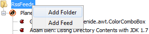
Use the actions to create new folders and register new feeds in the application.
For example, use this NASA feed to try out the "Add Feed" action:
You should see a new feed is added and the result should be something like this: